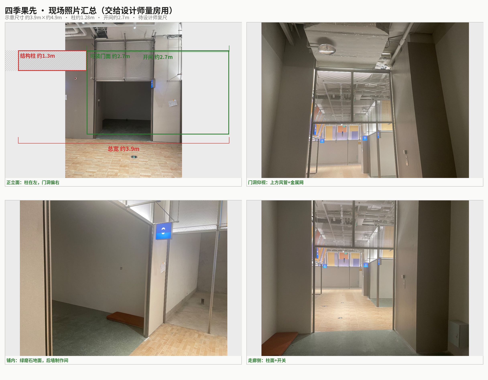
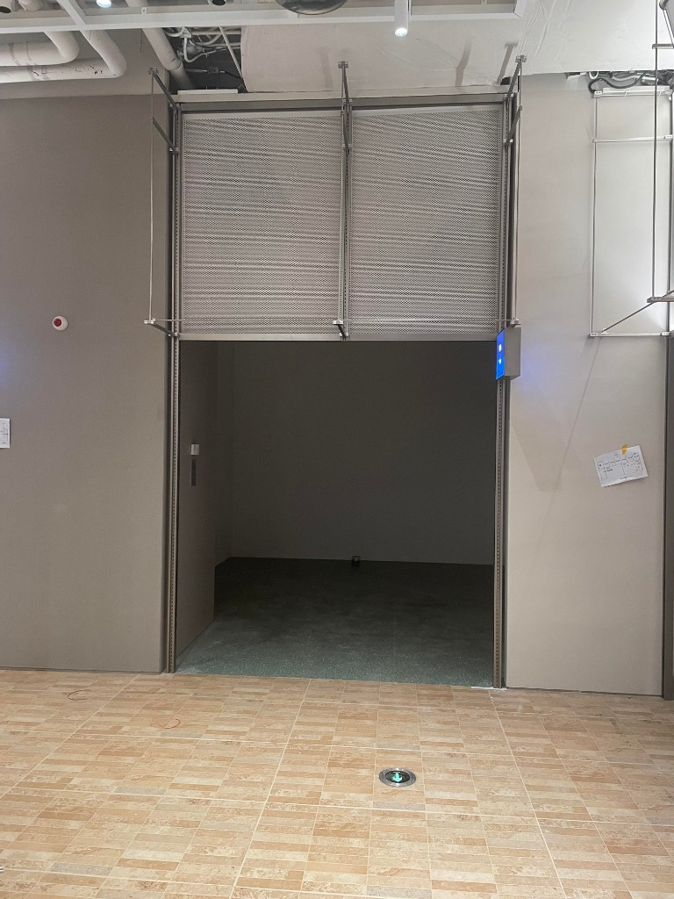
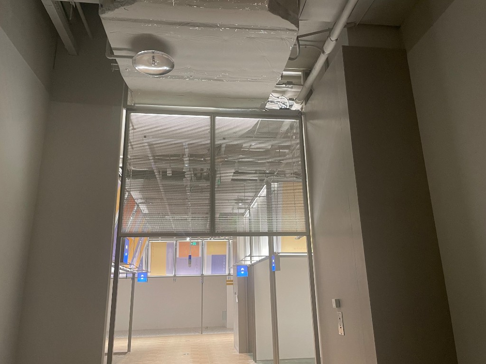
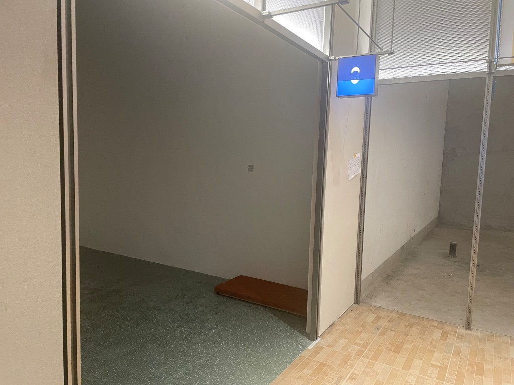
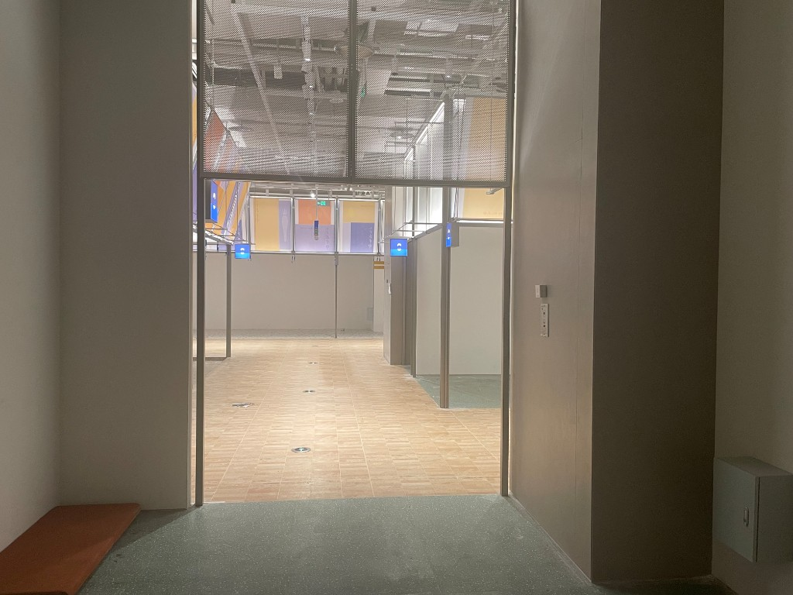
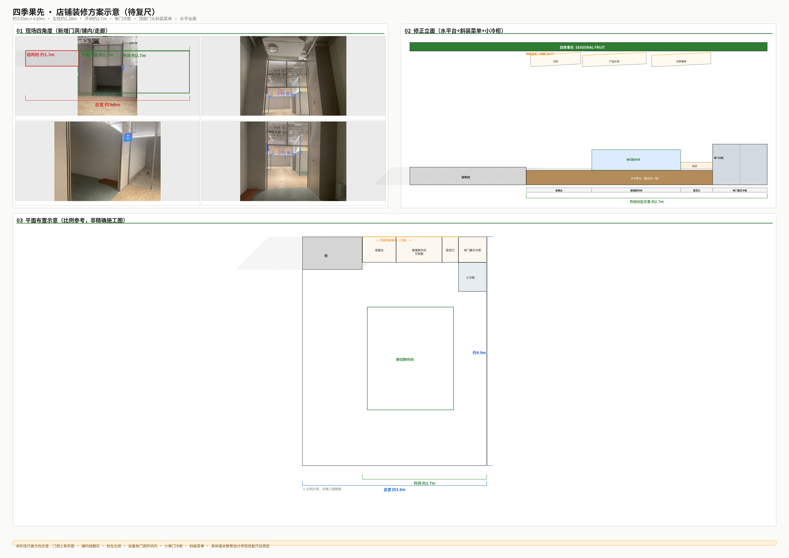
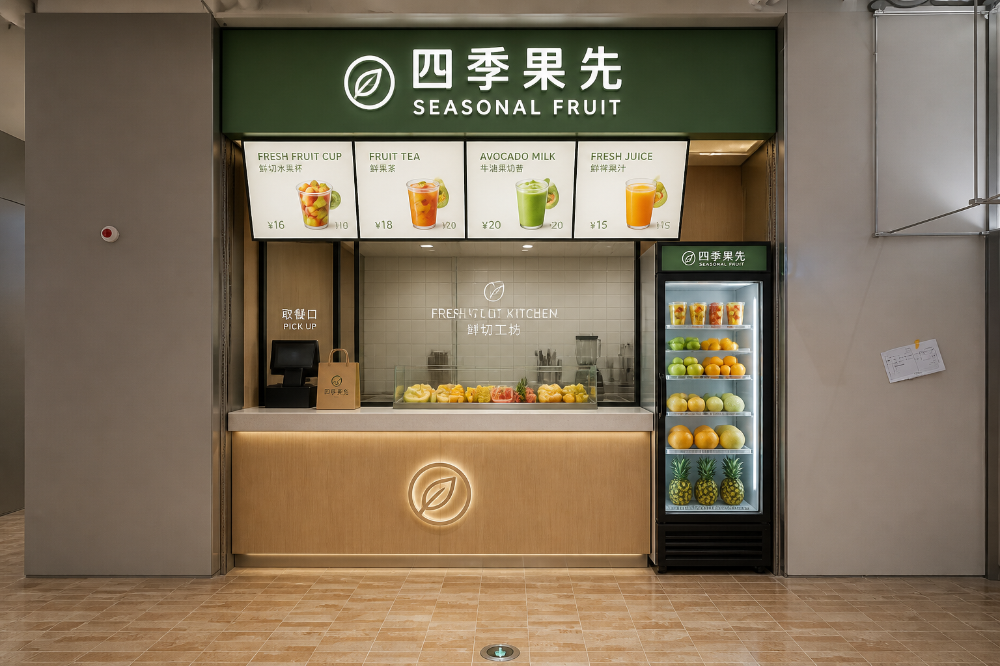

四季果先 · 装修方案示意
当前阶段不做毫米级精确，只定方向：左前有柱、门洞偏窄、上方风管、单门小冷柜、顶部门头斜装菜单、水平台面。
图上的「约 × m」是口述尺寸的大致参考，施工图要等设计师现场复尺后再定。
① 现场照片

② 四角度

正立面：柱在左，门洞偏右

门洞仰视：风管 + 金属网

铺内：绿磨石，后墙制作间

走廊侧：柱面 + 开关
③ 方案示意（立面 + 平面）

④ 透视参考（效果向，非施工图）
